300 вопросов о цигун. Секреты китайской медицины. Содержание
Массаж выполняется двумя руками, похлопывания производятся по какой-либо части тела или по какой-либо жизненной точке для того, чтобы очистить каналы и коллатерали, гармонизировать жизненные силы, укрепить здоровье.
I. Самомассаж.
Массаж лба (рис. 93, 94).
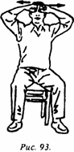
_____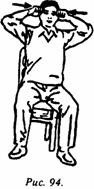
Кисти сжаты в кулаки, пространство между большим и указательным пальцами обращено вовнутрь, средними суставами указательных пальцев массируется межбровное пространство, затем обе руки двигаются в стороны до точек тай-ян. Подобным образом выполняют массаж 20 раз (АТ тай-ян расположена на расстоянии 5 фэней от конца каждой брови в углублениях по обеим сторонам).
Показание: оказывает помощь при болях в лобной части и ощущении тяжести в межбровье.
Растирание шеи (рис. 95).
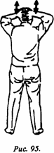
Переплести по четыре пальца обеих рук; ладони, лежат на затылке; большие пальцы обращены вниз. Делаются легкие растирания вниз до точки да-чжуй. Подобным образом делают 20 движений вверх и вниз (АТ да-чжуй - это седьмой позвонок, самая выступающая часть заднего отдела шеи).
Показание: применять при болях в затылке и для расслабления мышц заднего отдела шеи.
Омовение лица (рис. 96, 97).
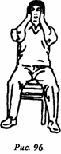
_____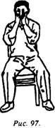
Растереть руки, чтобы они стали горячими; средние пальцы обеих рук упереть с обеих сторон у краев носа; растирать лицо снизу вверх соединенными пальцами до лба, затем развести в стороны через щеки, опускать вниз; такие круговые движения выполняются 20 раз.
Показание: способствует циркуляции ци и крови в лицевом отделе, придает румянец щекам. Предупреждает простуду и преждевременное образование морщин на лице.
Растирание ушей (рис. 98).
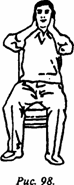
Средний, безымянный пальцы и мизинец расположены спереди, указательный и большой - сзади; зажав таким образом уши, выполняют растирающие движения вверх и вниз - всего 20 раз.
Показание: предотвращает головокружение и шум в ушах.
Растирание крыльев носа (рис. 99).
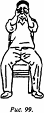
Обе руки слегка сжать в кулаки, тыльной стороной больших пальцев сделать 10 растирающих движений вверх и вниз вдоль основания носа с обеих сторон. Руки двигаются одновременно, движение вверх выполняется до начала глазной впадины, а вниз - до ноздрей.
Показание: способствует свободному кровотоку в носовой полости, поддержанию стабильной температуры, устраняет кашель, защищает от простуды.
Умывание кистей (рис. 100).
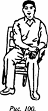
Растереть друг о друга ладони, чтобы они стали горячими. Левой ладонью выполнить одно растирающее движение по внешней стороне правой кисти. Затем ладонью правой руки делается одно растирание внешней стороны левой кисти. Всего делается по 10 растирающих движений каждой руки (растирание левой и правой руки считается за одно движение).
Показание: улучшает гибкость пальцев, гармонизирует ци и кровь, улучшает проходимость каналов и коллатералей.
Умывание рук (рис. 101, 102).
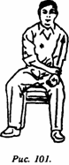
_____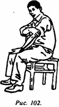
Ладонь правой руки плотно прижата к внутренней стороне левого запястья, с соразмерным усилием делается растирающее движение по внутренней стороне вверх до подмышечной впадины, затем ладонь перемещается на плечо и делается растирающее движение вниз по внешней стороне руки вплоть до левой кисти. Таким образом - вверх и вниз - выполняют 10 растирающих движений. Затем то же самое делают левой рукой, также 10 раз (вверх - вниз считается за один раз).
Показание: способствует развитию гибкости локтевого сустава, предохраняет от артрита, прочищает каналы и коллатерали, предупреждает ломоту в плечах.
Массаж груди (рис. 103).
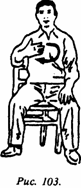
Левой рукой обхватить поясницу или положить ее на левое бедро, правой ладонью, прижатой к правой стороне груди, делать растирающие движения вверх; большой палец при этом обращен вверх, остальные четыре пальца обращены влево; в грудной области делаются круговые растирающие движения по часовой стрелке - выполняют 20 массирующих движений.
Показание: применяется для согревания груди, укрепляет сердце и преодолевает спертое дыхание.
Разминание живота (рис. 104).
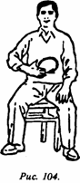
Левая рука лежит на пояснице или на левом бедре; правую ладонь прижимают под ребрами справа; большой палец направлен вверх, остальные смотрят влево; делается 20 круговых массирующих движений по часовой стрелке в области живота.
Показание: способствует улучшению аппетита, усиливает пищеварение, устраняет кишечно-желудочные заболевания.
Растирание поясницы (рис. 105).
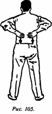
После того как обе руки будут растерты друг о друга, крепко прижать их по отдельности к пояснице (напротив почек), с усилием сделать движение вниз до крестцовой кости; затем, продолжая массировать, вернуть руки вверх насколько возможно. Это считается за одно движение. Всего выполняется 40 растирающих движений.
Показание: согревает поясницу, улучшает работу почек, стимулирует циркуляцию в канале дай; если практиковать этот способ до старости, то поясница будет прямой, не искривится, кроме того, это избавит от поясничных болей. Если человек страдает поясничными болями, то надо сделать несколько сотен массирующих движений, при появлении пота прекратить занятия. Тем самым можно достичь заметного лечебного эффекта.
Омывание бедер (рис. 106).
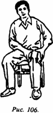
Обеими руками крепко обхватить верхнюю часть бедра, с силой делать растирающие движения от себя до коленного сустава, затем - в обратном направлении. Всего исполнить 10 таких движений (от себя - к себе считается за одно движение). Затем сделать такие движения на другой ноге.
Показание: укрепляет мышцы бедра, устраняет ломоту, улучшает гибкость коленного сустава, укрепляет походку.
Растирание голени (рис. 107).
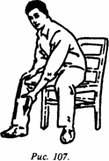
Пространство между большим и указательным пальцами левой кисти находится в ямке под коленом правой ноги, с усилием делается растирающее движение вниз к пятке, затем возвращают руку назад. Всего делают 10 растирающих движений. Затем точно так же делают 10 растирающих движений правой рукой по левой голени.
Показание: способствует расслаблению мышц голени устраняет переутомление, укрепляет и улучшает походку.
Растирание стоп (рис. 108).
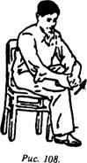
Сидя, левой рукой подтянуть к себе пятку левой ноги так, чтобы стопа была обращена вперед (чтобы точка юн-цюань смотрела прямо). Ладонью правой руки сделать 20 массирующих движений вверх и вниз по стопе левой ноги. Затем правой рукой притянуть к себе правую пятку и левой рукой выполнить 20 массирующих движений по стопе правой ноги.
Показание: разгоняет по телу силу инь, снижает стихию огня, улучшает работу печени и глаз; умиротворяет дух, успокаивает сон. Полезно растирать стопы после обмывания ног, эффективность будет еще больше.
При самомассаже следует обращать внимание на следующие моменты: количество массирующих движений и прилагаемые усилия могут быть различными в зависимости от индивидуальных особенностей; необходимо, чтобы после массажа было ощущение комфорта и расслабленности. Прилагаемые усилия должны быть соразмерными: если они слабы, то не будет нужных ощущений, если же усилия будут чрезмерными, то можно повредить кожу; необходимо поддерживать чистоту кожных покровов: если вы вспотели, необходимо вытереться полотенцем и только после этого продолжать занятия; массаж будет эффективнее, если проводить его обнаженным или облаченным в легкое платье. После завершения массажа нельзя сразу же умываться холодной водой; если в местах массирования имеются острые кожные заболевания или шрамы, необходимо прекратить массаж; самомассаж можно совмещать с подходящими к состоянию здоровья конкретного человека упражнениями оздоровительного цигуна, эффективность от этого увеличится.
II. Самоохлопывание.
"Бить в небесный барабан" (рис. 109).
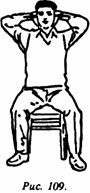
Ладонями крепко прижать ушные раковины, пальцы должны прижиматься к затылку; затем резко оторвать руки от головы. Повторить 10 раз.
Показание: проясняет мозг, устраняет шум в ушах, укрепляет слух, предохраняет от заболеваний уха.
Постукивания по плечам сзади (рис. 110, 111).
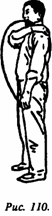
_____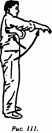
Попеременно обеими руками наносить удары по плечам сзади: правой ладонью по левому плечу (по верхней части плечевого сустава сзади), левой ладонью - по нижней части правого плечевого сустава; выполняется 20 ударов. Соответственно, левой ладонью делают удары по верхней части правого плеча сзади, а ладонью правой руки по нижней части левого плечевого сустава. Таким образом без перерыва также наносится 20 ударов.
Показание: расслабляет плечи, активизирует мышцы спины, избавляет от ломоты в спинно-плечевом отделе.
Постукивания по нижней части живота (рис. 112).
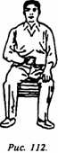
Верхняя часть корпуса выпрямлена, кисти обеих рук неплотно сжаты в кулаки, ладони обращены вовнутрь, выполняется 20 легких постукиваний в области нижней части живота.
Показание: гармонизирует ци и кровь, улучшает работу кишечника, укрепляет селезенку.
Постукивание по пояснице и ягодицам (рис. 113).
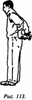
Ноги прямые, верхняя часть корпуса наклонена вперед под углом примерно 80°, кисти обеих рук слегка сжаты в кулаки, внутренней стороной делаются легкие постукивания по поясничному отделу и ягодицам - по 20 ударов.
Показание: улучшает работу почек, укрепляет поясницу, устраняет боли в области поясницы и ягодиц.
Удары по бедрам (рис. 114).
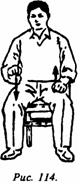
Сесть в естественную позу или оперевшись на спинку стула, обе кисти слегка сжать в кулаки; поочередно наносить удары по передней части бедра - левой рукой по левой ноге, правой рукой - по правой; движения от тазобедренного сустава к коленному и обратно - 14 раз.
Показание: расслабляет мышцы, стимулирует движение ци и крови, устраняет ломоту в бедрах.
300 вопросов о цигун. Секреты китайской медицины. Содержание